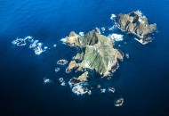

참고자료 : 타투
문신(文身), 타투(Tattoo), 입묵(入墨), 또는 자문(刺文)이라고 부르는 유사의료행위로 살갗을 바늘로 찔러 피부와 피하조직에 상처를 낸 뒤 먹물이나 물감을 흘려 넣어 피부에 그림이나 무늬, 글씨를 새기는 행위를 말한다.
"제가 한 번 둘러봤는데 절반 정도는 다 타투(문신)를 하고 계십니다."
23일 오후 국회 보건복지위 국정감사장에 참고인으로 출석한 김도윤 타투이스트는 국정감사장을 돌아보고 이같이 말하며 "그런데 단 한 분도 합법적으로 받으신 분은 없을 것"이라고 밝혔다. 의료인이 아니라면 문신을 하는 행위가 불법인 상황을 꼬집은 것이다. 김도윤 씨는 전국민주노동조합초연맹① 화학섬유식품노조 타투유니온지회장을 맡고 있다.
할리우드 유명 배우들에게도 작업을 해주고 있다고 밝힌 김 씨는 "유명하고 돈도 많이 벌지만, 손님에게 불법행위란 이유로 협박당하고 수사 받은 끝에 스스로 삶을 정리한 동료들을 보고 노동조합을 만들었다"고 소개했다.
김 씨는 "해외에 나가서 한국에서는 타투가 의료행위라고 하면 보통 '너 노스 코리아(North Korea·북한)에서 왔냐'고 묻는다"며 "한국 사법부는 국민 여론이 좋지 않던 때 아무도 타투를 할 수 없게 끔 일본의 판례를 가져와 타투를 의료행위로 규정했다"고 지적했다.
2년 전 헌법재판소는 의료인에게만 문신을 할 수 있도록 한 의료법이 합헌이라고 결정내렸다. 이에 타투이스트들은 문신을 해준 뒤에 돈을 내지 않고 신고하겠다는 협박을 받기 일쑤라고 한다.
김 씨는 "눈썹을 포함해 몸에 그리는 그림까지 국내 타투 소비자는 1,300만 명으로 집계된다"며 "고용노동부에서는 미래 유망 직업의 하나로 타투이스트를 꼽고 직업 코드를 부여했다. 국세청은 세금을 낼 수 있도록 사업자 등록을 위한 숫자도 만들어줬다"고 현실을 설명했다.
그러면서 "행정부에서는 타투이스트를 합법으로 취급하지만, 사법부에서는 불법이라고 이야기한다"며 "(입법이 없다면) 1,300만 명의 소비자는 내년에도 법률이 없는 상태에서 불안하게 타투를 받을 것"이라고 우려했다.
조규홍 보건복지부 장관은 문신 행위의 제도화에 원론적으로 찬성했지만, 관련 단체의 이해관계 조정이 쉽지 않다는 뜻이냐'는 질문에 "그렇다"고 짧게 답했다.
이에 대해 김 씨는 "관련 단체들의 얘기는 다 무시해 달라"며 "절대 합의할 수 없는 부분만 빼고 모두 합의한 만큼, 만들어 주시는 규칙(법)을 지킬 준비가 돼 있고, 지키는 데 자신 있다"고 말했다.
문신(文身), 타투(Tattoo), 입묵(入墨), 또는 자문(刺文)이라고 부르는 유사의료행위로 살갗을 바늘로 찔러 피부와 피하조직에 상처를 낸 뒤 먹물이나 물감을 흘려 넣어 피부에 그림이나 무늬, 글씨를 새기는 행위를 말한다.
① 민주노총 소개, 집회 및 일정, 정책자료, 노동문화소식, 비정규직, 노동기본권 등 이슈 제공.

| 1 | 안성재 셰프 '1인 70만 원' 디너 코스…오픈 61초 만에 매진 | |
| 2 | 금 제치고 올해만 45% '급등'…"진짜 금은 따로 있었네" | |
| 3 | 민주당 "독도 '다케시마' 지칭 지도 코엑스에"‥일본 대사관에 항의서한 |  |